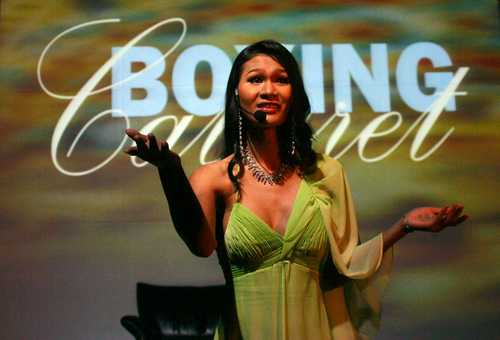
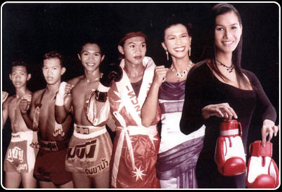
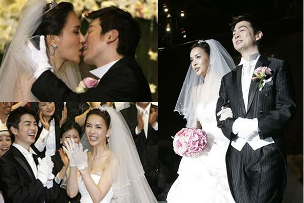
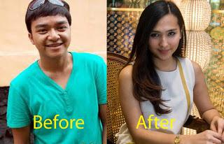

SPEAKER TEAM
Betaria
Leni
Hayati
5 Pria Transgender Paling Terkenal di Dunia
Noong Toom (Thailand)
Parinya Charoenphol

- Lahir pada tahun 1981

- Memulai karir sebagai seorang petinju 
- Di beri sebutan Kathoey (transgender) di Thailand
- Nama Nang-tom mulai terkenal pada bulan Februari 1998
- Pensiun dari dunia tinju pada tahun 1990
- Melakukan operasi transgender pada tahun 1999
Alicia Liu (Taiwan)
Zi-hua 

- Lahir pada tahun 1986
- Memulai karir sebagai model
- Tahun 2009 seorang dari rekan SMA-nya mengungkap identitas asli gendernya kepada media
- Tahun 2010 Alicia menunjukkan identitas nasional resminya yang baru diterbitkan dalam sebuah wawancara bahwa dirinya sekarang perempuan
- Melakukan operasi transgender pada umur 18 tahun yang didanai oleh pacar keduanya
Harisu (Korea Utara)
Lee Kyung-yeop
- Lahir pada tanggal 17 Februari 1975 
- Karir transgender : penyanyi pop, model dan artis di korea.
- Menjalani operasi kelamin pada tahun 1990
- Pertama kali muncul di publik pada tahun 2001
- Menikah dengan Micky Jung pada tanggal 19 mei 2007 setelah 2 tahun berpacaran
- "I was always a girl who loved playing with dolls."
Florencia De La V (Argentina)
Roberto Carlos Trinidad
- Lahir pada 2 Maret 1976 di Argentina

- Menjadi trangender saat dia berumur 17 tahun
- Menjadi artis transgender yang paling terkenal di dunia
- Bertemu pertama kali dengan seorang dokter gigi
bernama Pablo Goycochea di 1998 dan menikah pada 1 November - Menjadi ibu dari bayi kembar.
Dena Rachman (Indonesia)
Renaldi Denada Rachman 
- Lahir pada 30 Agustus 1987
- Sebelum Transgender :
- penyanyi cilik di era 1990-an yang cukup ngetop dengan lagu Ole-ole, rukun dan damai
- menjadi presenter acara anak-anak Krucil bernama Renaldi 
- menjalani operasi di usia 18 Tahun
- "Aku akhirnya menemukan identitas diri aku."
Terimakasih telah bersenang-senang dengan para transgender ternama versi SPEAKER team. ^^